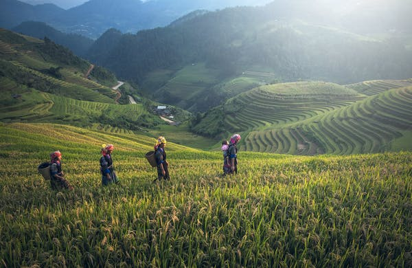
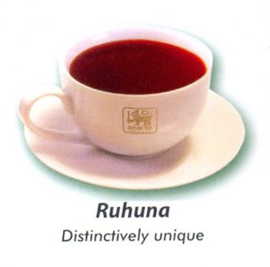
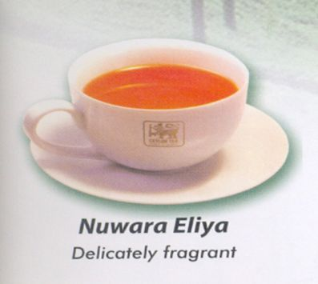
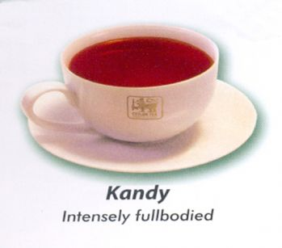

On a tea plantation visit you can learn all about tea picking and tea processing and also enjoy some fine Sri Lankan tea tasting. It’s probably a much more exciting prospect if you’re a tea lover, but even if you’re not, the Hill Country (or Tea Country, as it’s sometimes called) is arguably the most scenic part of the island and worth a visit.
Bearing the old Sinhalese name for the south of island, the Ruhuna tea-growing district lies in what is now the Southern Province of Sri Lanka. The tea-growing terrain, coastal plain with low hills towards the interior, lies mostly in the western part of the province, within the ‘wet zone’ watered by the southwest monsoon. Eastward, the land is predominantly scrub jungle, with some areas of grassy plain and coastal salt-marsh, growing wilder and more barren as one travels eastward. This eastern region is home to a number of nature reserves, including Ruhuna National Park, better known to Sri Lankans as Yala, whose upper reaches extend into the adjacent province of Uva. The forests of Ruhuna are home to wild elephants, leopards, bears, wild boar and many kinds of deer. It is a paradise for bird-lovers, with hundreds of native and migrant species, including giant flamingos which spend their breeding season among the salt-pans and marshes of Bundala, another coastal reserve.
The Kandy to Ella train journey is one of the most scenic in the world, but at seven hours it can be quite long for little ones. What you can do is take a trip on a shorter section, like Ella to Nuwara Eliya. Nuwara Eliya is beautifully scenic with a few other things to do, but mostly it’s about the scenery (along with the 19th-century colonial vibes and architecture).
Kandy (also known as the ‘Hill Capital’) is usually on most people’s itineraries. It’s the second-largest city in Sri Lanka and a UNESCO World Heritage site, particularly famous for the Temple of the Sacred Tooth Relic. If you don’t have time to venture further from Colombo into the Hill Country, then make sure you visit Kandy for a tea factory tour. You can also get away from the main tourist spots on this tour of the lesser know Matale area.
| Plantation | Taste | See the Tea |
|---|---|---|
| Ruhuna Tea Plantation | The teas of the Ruhuna district are defined as “low-grown” as they are cultivated at an altitude not exceeding 600m (2000 Ft) comprising vast sub regions from coastal plains to Southern edge of Sinharaja Rain Forest. The soil, combined with the low elevation of the estates, causes the tea-bush to grow rapidly, producing a long, beautiful leaf. Full-flavoured black tea is a distinctively unique Ruhuna speciality. Ruhuna factories produce a wide variety of leaf styles and sizes, including prized “tips”. |  |
| Nuwara Eliya Tea Plantation | Nuwara Eliya, the best-known of Sri Lanka’s tea-growing districts, is the most mountainous, and has the highest average elevation. Combined with low temperature, this produces teas of exquisite bouquet. The infusion in the cup is the lightest (palest) of all the types of Ceylon Tea, with a golden hue and a delicately fragrant flavour. Sought after grades include whole-leaf Orange Pekoe (OP) and Broken Orange Pekoe (BOP). |  |
| Kandy Tea Plantation | Kandy teas tend to produce a relatively bright infusion with a coppery tone. Though lighter in the cup, they present a good deal of strength and body, though not as much as the lower-grown products of Sabaragamuwa and Ruhuna. Most Kandy-district estates lie on the western slopes of the hills, so their taste is influenced by the ‘western quality season’, meaning that the best tea is produced during the first quarter of the year, when cool, dry weather sets in across the district. |  |
| ALL RIGHTS RESERVED © | ||